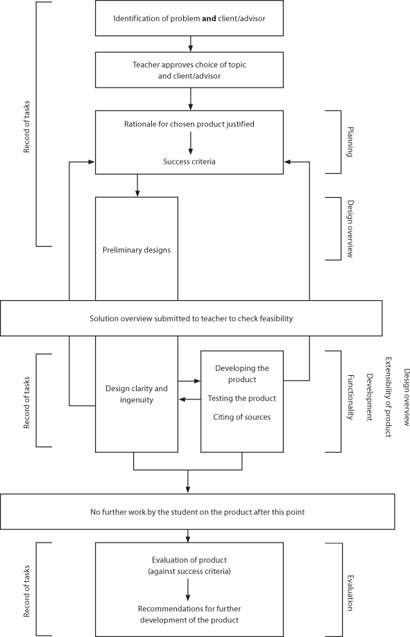

pseudocode-in-exams.pdf
JETS.pdf
IBCompSciGuide.pdf
Methods_ArrayTraicingPractice.docx
SortingAlgorithms.docx
Guidance for the development of the internal assessment
The flow chart indicates the stages in the development of the solution.
Students should note the iterative nature of the development of the solution and ensure they continually refer back to the success criteria in the development of the solution.

Word count and format
These word count figures in the table below are guidelines.
The overall word limit for the solution is 2,000; however, it is possible to complete the solution in 1,500 words without a significant loss of quality.
If students write extended prose in the sections where the word count does not apply, these words will be counted in the overall word count.
It is strongly recommended that the documentation is submitted in a commonly used format such as a PDF.
Prescribed format(s) of presentation are indicated in bold.
This information is taken from ibpublishing.ibo.org/
|
Criterion |
Recommended word count |
Comments—format of presentation |
|---|---|---|
|
|
||
|
Defining the problem or unanswered question |
175–250 |
Extended writing |
|
Justification for the proposed product |
175–250 |
Extended writing. The following sections could be included: Client and/or advisor;Stages of development of product – what are the most significant steps in making the product?; Programming language to be used – with justification; Reasons for choosing this product. |
|
Success criteria |
n/a |
Bulleted list |
|
|
||
|
Record of tasks |
n/a |
Record of tasks form: May be presented in the form of a table. (Note: Use of template required.) |
|
Design overview |
n/a |
Diagrams: Including scanned sketches, lists or concise statements, table for assets and techniques and for test plan. |
|
|
||
|
Developing the product |
500–1,000 |
Extended writing: Justification of techniques used, including annotated screenshots and sources where appropriate. |
|
|
||
|
Evidence of functionality |
n/a |
Video of product functioning plus, if necessary or appropriate, document including screenshots showing the product functioning should be included in the documentation folder with information on how to access it on the cover page. |
|
Extensibility |
n/a |
Assessed through design overview and, where appropriate, code listing. |
|
|
||
|
Evaluation of the product |
175–250 |
Extended writing |
|
Recommendations for further development |
175–250 |
Extended writing |
|
TOTAL |
1,200–2,000 |
|
|
Appendix/appendices |
n/a |
Additional information, such as evidence of consultation with and feedback from the client and/or adviser. |
Above part of the page is copied from ibpublishing.ibo.org/